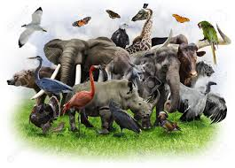

Activities for Reading and Writing

Doing activities with your children allows you to promote their reading and writing skills while having fun at the same time. These activities for pre-readers, beginning readers, and older readers includes what you need and what to do for each one.
1. Animals
Almost every story we tell our little ones involves animals. Children rejoice, eat and go to sleep in the comfort of listening to how all animals are happy around them. But, how many of us really take it upon ourselves to teach our kids to show compassion for animals in reality?
2. Plants and Gardening
Plants are everywhere around us. They are essential for human beings and provide with various natural resources including the air we breathe. Hence, teaching kids about plants is important. And what better way to teach children about plants than to get them into gardening?
3. Outer Space
Space – a term that is shrouded in mystery and one that contains many marvels of the universe. There are way more than billions of galaxies in space and just imagining the far corners of the universe is an incomprehensible feat for the human brain!
4. India
Reading books or talking in English is not the only way to learn the language. Undertaking fun games and activities that resort to understanding the meaning of the language helps children get a deeper grasp of it. Games like Pictionary help them express their idea in pictures while trying how best a picture can translate into an English word. Dumb charades focus on expressions, hand gestures, and body language, making them better at conveying what they want to say through non-verbal cues. Hangman will help them understand how to eliminate unwanted letters and understand the formation of words and pronunciation in a fun way.